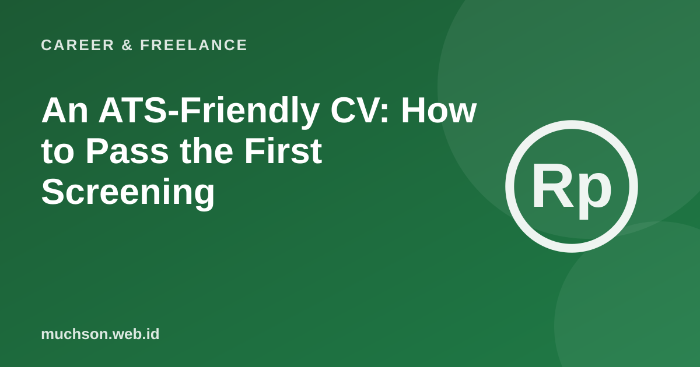

Home › Articles › Career & Freelance
Career & FreelanceAn ATS-Friendly CV: How to Pass the First Screening
Your CV is often read by two parties: an applicant tracking system (ATS) that filters, then a human who judges. A good CV can be read by a machine and is appealing enough to a person within seconds.

How an ATS generally works
Text description of the diagram
- You send your CV: through a portal or email
- The ATS reads it: extracts the text and data
- Filtered: by keywords and criteria
- Judged by a person: a recruiter reads it briefly
Format rules
Strong content
- Match the job posting. Use the same terms as the job description, as long as you really have the skill.
- Show results. "Reduced load time by 40%" is stronger than "responsible for performance".
- Start sentences with a verb. Built, led, designed, reduced.
- Be concise. Usually one to two pages.
- Be honest. Do not add skills you do not have.
Don't overdo it
Stuffing a CV with keywords without substance is easy for recruiters to see. The system is only the first step; what decides is whether you look right for the job.
FAQ
Do all companies use an ATS?
Many mid-sized and large companies do, while small companies often do not. A simple format is safe for both.
Should I put a photo on my CV?
It depends on custom and the company's request. Many systems do not need one, and some companies even recommend none.
Can I use AI to write my CV?
For tidying and ideas, yes, but the content must be accurate and true. You must be able to explain every point in an interview.